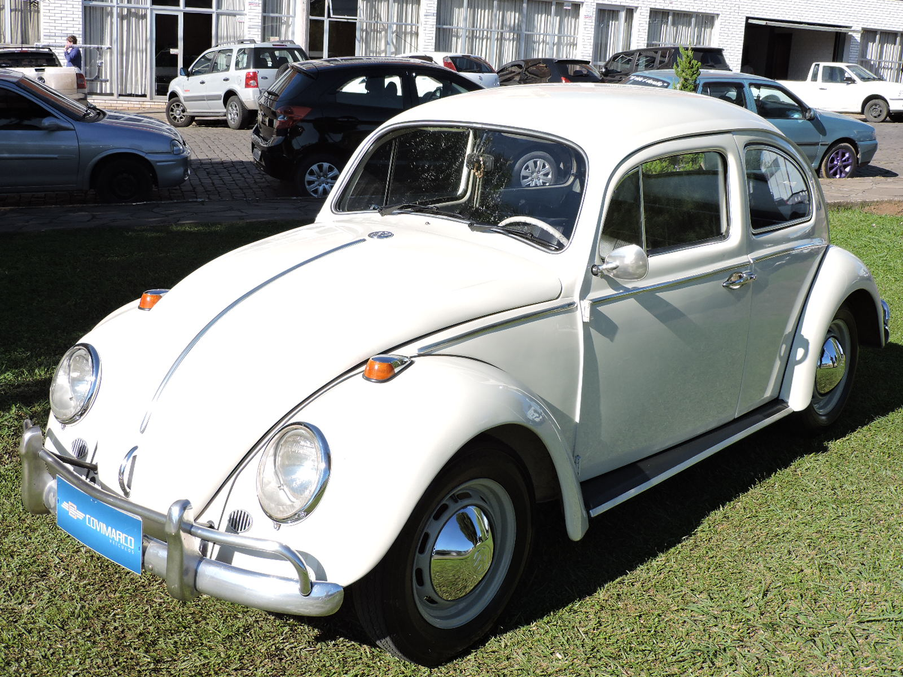
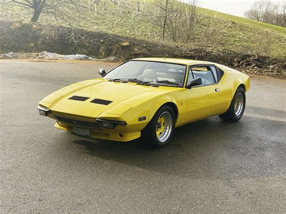
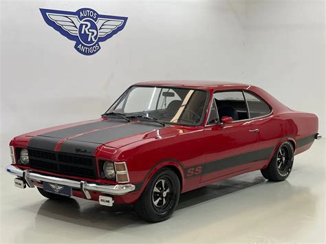
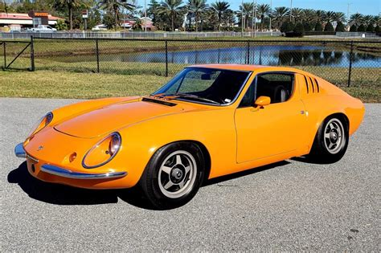
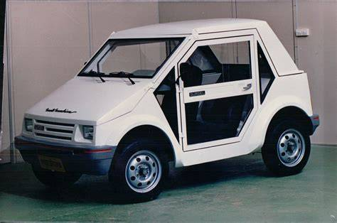

O Ford Maverick 1974 é um dos maiores ícones da cultura
automotiva brasileira. Lançado com a missão de competir
diretamente com o Chevrolet Opala, o modelo se destacava
logo de cara pelo seu visual puramente muscle car americano,
com linhas fluidas, capô longo e a marcante traseira no estilo fastback
O ano de 1970 foi histórico para o "Besouro" no Brasil: foi o período
em que ele consolidou sua liderança absoluta de mercado e ganhou
mudanças que definiram a sua identidade para as décadas seguintes.
A grande novidade daquele ano foi uma reformulação estética e técnica
conhecida por muitos como a transição para a "segunda série".
O modelo abandonava os antigos para-choques de tubo duplo
e adotava lâminas únicas de aço cromado com uma faixa de borracha preta no centro.

Nascido de uma parceria direta entre a De Tomaso e a Ford,
o Pantera chegou a meados dos anos 70 como o verdadeiro herdeiro
espiritual da mecânica do GT40 nas ruas. Em 1976, a versão GTS
estava no centro das atenções. O modelo trazia uma presença de palco espetacular
e refinamentos mecânicos que corrigiram os problemas de juventude
dos primeiros anos da década.
Curiosidade Histórica: O Pantera era tão visceral que conquistou astros
da música e do cinema. O mais famoso deles foi Elvis Presley,
que comprou um Pantera amarelo e, reza a lenda, chegou a dar
um tiro de revólver no volante do carro em um dia de fúria
porque o motor se recusou a ligar!

Se o Maverick era a força bruta do V8 e o Fusca a escolha do povo,
o Chevrolet Opala 1978 representava o ápice do prestígio, do conforto
e do status no Brasil. Em 1978, a linha Opala já era o grande objeto de desejo
da classe média-alta e dos entusiastas de velocidade, vivendo um de seus anos
mais maduros e refinados.
Foi justamente na linha 1978 que a Chevrolet introduziu melhorias importantes
na suspensão e nos freios do Opala, deixando o carro bem mais estável
e seguro nas curvas corrigindo uma fama antiga de que a traseira do carro
era "arisca" demais em alta velocidade.

O Puma GTE 1974 é o maior exemplo de como a criatividade brasileira
conseguiu contornar as restrições de importação da época para criar um autêntico
fora de série esportivo. Conhecido internacionalmente pelo seu design apaixonante,
o Puma era o carro dos playboys, dos pilotos e de quem queria chamar
a atenção por onde passava.
A sigla GTE significava Grã-Turismo Exportação, refletindo o sucesso
que o modelo fazia não apenas no Brasil, mas também na Europa
e nas Américas. O ano de 1974 foi um ponto de maturidade para o modelo,
trazendo refinamentos visuais e uma mecânica consagrada:
-Carroceria em Fibra de Vidro
-Coração Volkswagen Aircooled
-Cockpit de Competição

O MotoMachine nasceu com um propósito muito claro: ser um veículo
estritamente urbano, feito para driblar o trânsito e a falta de espaço nas grandes cidades.
Ele era minúsculo medindo menos de 3 metros de comprimento
e trazia soluções que pareciam saídas de um filme de ficção científica da época.
O grande trunfo do MotoMachine era a sua modularidade. A Gurgel o projetou
para ser um carro mutável através de um sistema de capotas e painéis removíveis.
O detalhe mais marcante do design eram as portas laterais feitas de acrílico transparente.
Isso dava uma sensação de espaço incrível dentro do minúsculo cockpit
e permitia que os ocupantes enxergassem o chão e as rodas em movimento.
